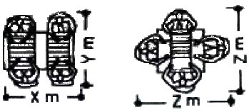
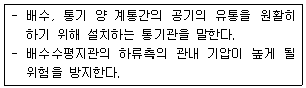
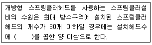
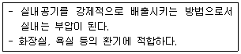
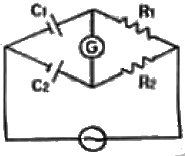
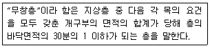
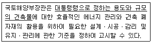

건축설비기사 (2011-03-20 기출문제)
1과목: 건축일반
1. 주택단지 계획에 있어서 남북간 인동간격을 결정하는 가장 중요한 요소는?
- 프라이버시 유지
- 여름철의 통풍 확보
- 연소가능성 배제
- 겨울철의 일조시간 확보
(정답률: 79%)

2. 다음 그림과 같이 식사공간의 의자배치를 하였을 때 그 크기로서 가장 적합한 것은? (단, 단위는 m)

- X=1.30, Y=1.60, Z=1.90
- X=1.10, Y=1.50, Z=1.80
- X=1.40, Y=1.10, Z=2.20
- X=1.10, Y=1.70, Z=1.50
(정답률: 61%)
3. 보강콘크리트블럭조에서 테두리보를 설치하는 이유가 아닌 것은?
- 횡력에 의한 수직균열의 발생을 방지하기 위하여
- 가로철근의 끝부분을 장착시키기 위하여
- 하중을 균등하게 분포시키기 위하여
- 집중하중을 받는 블록을 보강하기 위하여
(정답률: 73%)
4. 2층 조적건축물에 있어 내력벽으로 둘러싸인 부분의 바닥 면적이 60m2을 넘는 경우, 그 1층 내력벽의 두께는 얼마 이상으로 하여야 하는가?
- 9cm
- 19cm
- 29cm
- 39cm
(정답률: 55%)
5. 남향창에 대한 일사량이 여름보다 겨울이 큰 이유는?
- 태양과 지구의 거리가 가깝기 때문이다.
- 수목 등에 의한 일광의 차단이 작기 때문이다.
- 태양의 고도가 낮고 방위각이 작기 때문이다.
- 대기중의 수분이 작아서 광선이 흡수되는 비율이 작기 때문이다.
(정답률: 83%)
6. 다음 중 열교(thermal bridge)현상에 관한 설명으로 옳지 않은 것은?
- 벽이나 바닥, 지분 등의 건축물 부위에 단열이 연속되지 않는 부분이 있을 때 생긴다.
- 열교현상을 줄이기 위해서는 콘크리트 라멘조의 경우 가능한 한 내단열로 시공한다.
- 열교현상이 발생하면 부위는 표면온도가 낮아져서 결로가 쉽게 발생한다.
- 열교현상이 발생하면 전체 단열성이 저하된다.
(정답률: 81%)
7. 건축물의 용도별 수직교통량 예측 중 피크타임(peak time)이 발생하는 시점으로 옳지 않은 것은?
- 사무소-점심시간
- 공동주택-통학 및 통근시간
- 호텔-체크인과 체크아웃 시간
- 병원-면회 개시 시간
(정답률: 74%)
8. 홀 형태의 건축음향설계와 관련된 설명 중 옳지 않은 것은?
- 직접음이 약한 부분을 1차 반사율이 보강할 수 있도록 한다.
- 실내 전체에 음에너지를 확산시키도록 계획한다.
- 실 전체에 대한 음압 분포가 균일해야 한다.
- 에코현상을 최대한 유도하도록 설계한다.
(정답률: 81%)
9. 사무소 건물에 아트리움(atrium)을 도입하는 이유에 해당하지 않는 것은?
- 에너지 절약에 유리하다.
- 사무공간에 빛과 식물을 도입하여 자연을 체험하게 한다.
- 근로자들의 상호교류 및 정보교환의 장소를 제공한다.
- 보다 넓은 사무공간을 확보할 수 있다.
(정답률: 77%)
10. 초고층 골조시스템의 한 종류인 아웃리거시스템(Outrigger System)에 대해 옳게 설명한 것은?
- 간격이 좁게 배열된 기둥과 보를 건물 외부에 둘러싸서 횡하중에 저항하는 시스템
- 횡하중에 저항하는 코어를 외부 기둥에 연결하는 시스템
- 횡하중을 중앙부 코어에서 모두 부담하는 시스템
- 외부에 가새를 넣어 횡학을 부담하도록 하는 시스템
(정답률: 67%)
11. 건조공기의 조성 중 질소(N2), 산소(O2) 다음으로 알맞은 성분은?
- 아르곤
- 탄산가스
- 네온
- 헬륨
(정답률: 70%)
12. 주택의 침실계획에 대한 설명 중 옳은 것은?
- 어린이 침실은 가급적 거실로부터 가까이 위치하는 것이 좋다.
- 부부침실에서 침대는 창쪽에 머리를 두지 않도록 비치하는 것이 좋다.
- 침실은 현관으로부터 가까이에 있는 편이 좋다.
- 침실의 출입문은 안여닫이로 하지 않는 것이 좋다.
(정답률: 67%)
13. 건축의 성립으로 영향을 미치는 요소들에 대한 설명으로 옳지 않은 것은?
- 자연 조건이 비슷한 여러 나라가 서로 다른 건축형태를 갖는 것은 기후 및 풍토적 요소 때문이다.
- 지붕의 형태, 검사 등은 기후 및 풍토적 요소의 영향 때문이다.
- 건축재료와 이를 구성하는 기술적인 방법에 따라 건물형태가 변화하는 것은 기술적 요소에서 기인한다.
- 봉건시대에 신을 위한 건축이 주류를 이루고 민주주의 시대에 대중을 위한 학교, 병원 등의 건축이 많아진 것은 정치 및 종교적 요소 때문이다.
(정답률: 72%)
14. 철근콘크리트 보에서 사인장 균열에 대한 보강과 가장 관계 깊은 철근은?
- 녹근
- 배력근
- 안장철근
- 압축철근
(정답률: 63%)
15. 다음 중 스페이스프레임구조를 구축할 때 가장 적당한 자료는?
- 커튼월
- 벽돌
- 콘크리트
- 강재
(정답률: 50%)
16. 다음 중 광속을 표시하는 단위는?
- Iumen
- Candela/n2
- Candela
- lux
(정답률: 71%)
17. 도서관의 출납시스템에 대한 설명 중 옳지 않은 것은?
- 폐가식은 서고와 열람실이 분리되어 있다.
- 자유개가식은 서가의 정리가 잘 안되면 혼란스럽게 된다.
- 안전개가식은 열람자가 목록 카드에 의해 책을 선택하여 관원에게 수속을 마친 후 열람하는 방식이다.
- 반개가식에서 열람자는 직접 서가에 면하여 책의 제제나 표지 정도는 볼 수 있으나 내용을 보려면 관원에게 요구하여야 한다.
(정답률: 54%)
18. 실내음향의 대한 설명으로 옳지 않은 것은?
- 음의 계축시간이 길어지면 놀이 감각은 둔해진다.
- 직접음은 전파경로가 가장 높으므로 수용점에 최초로 도래한다.
- 계획상 멀리 전달되게 하기도 하고 가까이에서 소멸되도록 하기도 한다.
- 청중이 많을수록 흡음력이 커서 잔향시간이 적어진다.
(정답률: 59%)
19. 다음 중 주로 인장력을 부담하는 철물이 아닌 것은?
- 턴버클(turr bucklel)
- 퐁타이(forn tie)
- 앵커볼트(anchol boll)
- 스터드볼트(srud boll)
(정답률: 63%)
20. 다음 중 에스컬레이터에 관한 설명으로 옳지 않은 것은?
- 직렬식은 점유면적이 크고, 승객의 시야가 좋으나 승객의 시야가 일방향으로 한정된다.
- 병렬식은 실내를 내려다보는 조망이 유리하며, 교차식에 비하여 점유면적이 작다.
- 교차식은 직렬식에 비하여 점유면적이 적으며, 조망이 불리하다.
- 수평형 구조를 가지는 무빙워크시스템으로도 활용된다.
(정답률: 68%)
2과목: 위생설비
21. 비철금속관 중 동관에 대한 설명으로 옳지 않은 것은?
- 전기 및 열의 전도성이 우수하다.
- 전성ㆍ연설이 풍부하여 가공이 용이하다.
- 연수에는 내식성이 크나 담수에는 부식된다.
- 상온 공기 속에서는 변하지 않으나 탄산가스를 포함한 공기 중에는 푸른 녹이 생긴다.
(정답률: 73%)
22. 통기관의 최소 관경에 대한 설명 중 옳지 않은 것은?
- 각개통기관은 그것이 접속되는 배수관 관경의 1/2 이상으로 한다.
- 루프통기관은 배수수평지관과 통기수직관 중 작은 쪽 관경의 1/2 이상으로 한다.
- 결합통기관은 통기수직관과 배수수직관 중 작은 쪽의 관경 이상으로 한다.
- 도피통기관은 배수수평지관의 관경 이상으로 하되 최소 75nm이상으로 한다.
(정답률: 62%)
23. 다음 중 특수통기방식의 일종인 소벤트시스템이 사용되는 이음쇠는?
- 팽창관
- 섹스티아 밴드관
- 섹스티아 이음쇠
- 공기분리 이음쇠
(정답률: 52%)
24. 스위블형 신축이음쇠에 관한 설명으로 옳은 것은?
- 페클리스 신축이음쇠라고도 한다.
- 고온고압율 증기배관에 주로 사용되며 온수 난방용 배관에는 사용하지 않는다.
- 이음부와 나사회전을 이용해서 배관의 신축을 흡수한다.
- 강관 또는 통관을 곡관으로 구부려, 구부림을 이용하여 배관의 신축을 흡수한다.
(정답률: 68%)
25. 다음 설명에 알맞은 통기관은?

- 습통기관
- 도피통기관
- 각개통기관
- 신정통기관
(정답률: 68%)
26. 다음의 스프링클러설비에 관한 기준 내용 중 ()안에 알맞은 것은?

- 0.6m3
- 1.2m3
- 1.6m3
- 2.0m3
(정답률: 64%)
27. 캐비테이션의 방지 방법으로 옳지 않은 것은?
- 흡수관을 가능한 한 짧고 굵게 함과 동시에 관내에 공기가 체류하지 않도록 배관한다.
- 설계상의 펌프 운전범위 내에서 상상 필요 NPSH가 유효 MPSH보다 크게 되도록 배관계획을 한다.
- 흡입 조건이 나쁜 경우는 비속도를 작게 하기 위해 회전수가 작은 펌프를 사용한다.
- 양정에 필요 이상의 여유를 주지 않는다.
(정답률: 60%)
28. 중앙식 급탕방식 중 간접가열식에 대한 설명으로 옳지 않은 것은?
- 고압용 보일러가 필요하다.
- 대규모 급탕설비에 적합하다.
- 가열보일러는 난방용 보일러와 겸용할 수 있다.
- 저탕조 내에 설치한 코일을 통해서 관내의 물을 간접적으로 가열한다.
(정답률: 70%)
29. LNG의 주성분은 무엇인가?
- C4H4
- CH4
- C6H4
- C2H2
(정답률: 60%)
30. 펌프의 양수량 0.1m3/min, 양정 100m, 펌프의 효율 50%일 때 펌프의 축동력은?
- 약 3.3 kW
- 약 4.1 kW
- 약 4.4 kW
- 약 5.0 kW
(정답률: 66%)
31. 수도본관에서 높이 5m에 있는 세정밸브식 대변기에 수도직결방식으로 물을 급수하기 위한 수도본관의 최소 필요 압력은? (단, 배관의 마찰손실수두는 30kPa 이다.)
- 130 kPa
- 150 kPa
- 180 kPa
- 200 kPa
(정답률: 56%)
32. 세정수의 급수방식에 따른 대변기의 종류에 속하지 않는 것은?
- 하이 탱크식
- 세정 밸브식
- 인체 감지식
- 로 탱크식
(정답률: 45%)
33. 급수설비에서 크로스 커넥션의 방지 대책으로 가장 알맞은 것은?
- 설비 내에 버클 브레이커 및 역류방지 장치를 부착한다.
- 관내 유속을 억제하고, 설비 내에 써지탱크(surge tank) 및 안전밸브를 설치한다.
- 배관 계통별로 색깔로 구분하여 오접합을 방지하며 통수시험에 의해 체크한다.
- 수평배관에는 공기나 오물이 정체하지 않도록 하며, 어쩔 수 없이 공기 정체가 일어나는 곳에는 공기배기밸브를 설치한다.
(정답률: 51%)
34. 내경이 50cm인 급수배관에 물이 1.5m/sec의 속도로 흐르고 있을 때, 체적유량은?
- 0.09 m3/min
- 0.18 m3/min
- 0.24 m3/min
- 0.36 m3/min
(정답률: 51%)
35. 다음 중 왕복식 펌프에 속하는 것은?
- 볼류트 펌프
- 기어 펌프
- 디퓨져 펌프
- 피스톤 펌프
(정답률: 66%)
36. 통기설비에 관한 설명으로 옳은 것은?
- 간접배수계통의 통기관은 다른 통기계통에 접속하여 대기 중에 개구한다.
- 각개통방식 및 루프통기방식에는 통기수직관을 설치하지 않는다.
- 통기수직관의 상부는 관경을 축소하여 그 위쪽 끝은 단독으로 대기 중에 개구한다.
- 통기수직관의 하부는 최저위치에 있는 배수수평지관보다 낮은 위치에서 배수수직관에 접속하거나 또는 배수수평주관에 접속한다.
(정답률: 53%)
37. 연결송수관설비의 설치기준 내용으로 옳지 않은 것은?
- 방수구의 호스접결구는 바닥으로부터 높이 0.5m 이상 1m 이하의 위치에 설치한다.
- 주배관의 구결은 100m 이상의 것으로 한다.
- 펌프의 양정은 최상층에 설치된 노즐선단의 압력이 0.17mPa 이상의 압력이 되도록 한다.
- 방수구는 연결송수관설비의 전용방수구 또는 옥내소화전방수구로서 규격 65mm 의 것으로 설치한다.
(정답률: 49%)
38. 10℃의 냉수 100kg에 70℃의 탕 100kg을 혼합할 경우, 혼합수의 온도는?
- 36℃
- 38℃
- 40℃
- 42℃
(정답률: 67%)
39. 중앙식 급탕방식의 설계상의 유의점으로 옳지 않은 것은?
- 순환펌프는 과대하게 되지 않도록 주의하며, 반탕관측에 설치한다.
- 각 계통 및 지관의 순환유량이 균등하게 되도록 유량조절이 가능하게 한다.
- 열환기기 및 저탕조의 압력상승, 배관의 팽창신축에 대한 안전책을 고려한다.
- 수평배관의 길이가 가능한 한 깊게 되도록 수직관을 배치하며, 반탕관의 길이도 같게 되도록 계획한다.
(정답률: 71%)
40. 수질과 관련된 용어에 대한 설명 중 옳지 않은 것은?
- BOD는 생물화학적 산소요구량을 의미한다.
- COD는 화학적 산소 요구량을 의미한다.
- SS는 오수 중의 용존산소량을 ppm으로 나타낸 것이다.
- 총질소는 무기성 및 유기성 질소의 총량을 나타낸 것이다.
(정답률: 77%)
3과목: 공기조화설비
41. 펌프의 전양정 50mAq, 양수량 2m3/min, 효율이 0.6 일 때 축동력은?
- 27.2 kW
- 32.4 kW
- 42.8 kW
- 48.6 kW
(정답률: 59%)
42. 증기트랩 중 플로트 트랩에 관한 설명으로 옳지 않은 것은?
- 자동 에어밴트가 설치되어 있어 공기배출능력이 우수하다.
- 구조상 동결의 우려가 있는 곳에는 적합하지 않다.
- 증기해머에 의해 내부손상을 입을 수 있다.
- 소량의 응축수는 처리할 수 있으나 다량의 응축수는 처리할 수 없다.
(정답률: 59%)
43. 바이패스형 변풍량 유닛(VAV unit)에 대한 설명으로 옳지 않는 것은?
- 유닛의 소음발생이 적다.
- 송풍덕트 내의 정압제어가 필요하다
- 덕트계통의 증설이나 개설에 대한 적응성이 적다.
- 천장 배의 조명으로 인한 발생열을 제거할 수 있다.
(정답률: 43%)
44. 기기나 배관 내의 유량조절을 빈번하게 하지 않고 일정량으로 고정시키는 경우에 사용되는 밸브는?
- 체크밸브
- 볼밸브
- 플러스 콕
- 유니온
(정답률: 62%)
45. 다음의 공기조화방식에 대한 설명 중 옳은 것은?
- 각층 유닛 방식 덕트 방식 보다 유지관리가 쉽다.
- 팬코일 유닛 방식에서 유닛을 창문 밑에 설치하면 콜드 드래프트를 줄일 수 있다.
- 이중 덕트 방식은 에너지 절약형 공기조화방식이다.
- 유인 유닛 방식은 전공기(全空氣)방식의 일종이다.
(정답률: 52%)
46. 건물의 냉부부하의 종류 중 현열과 잠열성분을 모두 갖는 것은?
- 벽체로부터의 취득열량
- 유리로부터의 취득열량
- 인체의 발생열량
- 덕트로부터의 취득열량
(정답률: 74%)
47. 덕트설계에 관한 설명중 옳지 않은 것은?
- 굴곡부분은 될 수 있는 대로 작은 곡률 반지름을 취한다.
- 저속 덕트의 확대부분 각도는 될 수 있으면 15° 이하로 한다.
- 저속 덕트의 축소부분 각도는 될 수 있으면 30 이하로 한다.
- 덕트 단면의 아스팩트비는 4:1이하로 하는 것이 바람직하다.
(정답률: 53%)
48. 2중 효용 흡수식 냉동기에 관한 설명 중 옳지 않은 것은?
- 단효용 흡수식 냉동기보다 냉각탑 용량을 줄일 수 있다.
- 저온발생기는 고온발생기보다 압력이 높다.
- 증기보일러와 연동하여 구동한다.
- 냉매증기는 수증기이다.
(정답률: 50%)
49. 가스 스토브를 사용한 가스 난방에 있어서 실의 총손실열량이 180.000W, 가스의 발열량이 16.800kJ/m3, 가스 소요량이 50m3일 때 가스 스토브의 효율은?
- 68%
- 72%
- 77%
- 84%
(정답률: 39%)
50. 공기조화방식 중 전공기 방식의 일반적인 특징으로 옳지 않은 것은?
- 중간기에 외기 냉방이 가능하다.
- 송풍량이 많아 실내 공기의 오염이 적다.
- 팬 코일 유닛과 같은 기구의 노출이 없어서 실내 유효면적을 넓힐 수 있다.
- 열매체인 냉ㆍ온풍의 운반에 필요한 팬의 소요동력이 냉ㆍ온수를 운반하는 펌프동력 보다 적게 든다
(정답률: 52%)
51. 다음 중 주방, 공장, 실험실에서와 같이 오염물질의 확산 및 방지를 가능한 한 극소화시키려고 할 때 적용되는 환기방식은?
- 희석환기
- 국소환기
- 전체환기
- 자연환기
(정답률: 72%)
52. 증기난방에 대한 설명으로 옳은 것은?
- 예열시간이 길고 간헐운전이 곤란하다.
- 고압증기난방에 사용되는 증기의 압력은 1~35kPa 정도이다.
- 부하변동에 따른 실내방열량의 제어가 곤란하다.
- 열의 운반능력이 작아 계통별 용량제어가 용이하다.
(정답률: 60%)
53. 송풍기 날개 형상에 따른 분류 중 정압이 비교적 낮고 송풍량이 적은 환기팬으로 옥상에 많이 설치하는 것은?
- 후곡형
- 익형
- 방사형
- 관류형
(정답률: 44%)
54. 다음과 같은 특징을 갖는 환기방식은?

- 압입흡출병용방식(급기팬+배기관)
- 압입방식(급기팬+자연배기)
- 흡출방식(자연급기+배기팬)
- 자연환기방식(자연급기+자연배기)
(정답률: 68%)
55. 다음 중 인체의 열쾌적에 영향을 미치는 물리적 온열요소에 속하는 것은?
- 상대습도
- 노점온도
- 엔탈피
- 현열비
(정답률: 67%)
56. 유효온도(Effective Temperature)를 감소시키는 원인이 되는 것은?
- 습구온도의 상승
- 풍속의 상승
- 상대습도의 상승
- 건구온도의 상승
(정답률: 43%)
57. 천장취출구에서 취출을 하는 경우의 확산반경에 대한 설명 중 옳지 않은 것은?
- 거주영역에서 평균풍속이 0.1~0.125m/s로 되는 최대 단면적의 반경을 최대 확산반경이라 한다.
- 거주영역에서 평균풍속이 0.125~0.25m/s로 되는 최대 단면적의 반경을 최소 확산반경이라 한다.
- 인접한 취출구의 최소 확산반경이 겹치면 편류현상이 생긴다.
- 거주영역에 최소 확산반경이 미치지 않는 영역이 없도록 천장을 장방형으로 나누어 배치하여야 한다.
(정답률: 36%)
58. 공기조화배관의 배관회로방식에 대한 설명 중 옳지 않은 것은?
- 개방회로방식은 보통 축열방식이나 개방식 냉각탑의 냉각수 배관 등에 응용된다.
- 밀폐회로방식은 순환수가 공기와 접촉하지 않으므로 물처리비가 적게 든다.
- 개방회로방식의 경우 펌프의 양정에는 실양정이 포함되므로 동력비가 많이 든다.
- 밀폐회로방식에는 물의 팽창을 흡수하기 위해 팽창관이 사용되며 팽창탱크는 사용하지 않는다.
(정답률: 58%)
59. 습공기의 엔탈피(Enthalpy)를 옳게 표현한 것은?
- 습공기의 현열량을 나타낸다.
- 습공기의 잠열량을 나타낸다.
- 습공기의 전열량을 나타낸다.
- 습공기의 전압을 나타낸다.
(정답률: 60%)
60. 20인이 채실하는 어떤 실내공간의 CO2 농도를 외기(外氣)로 환기시켜 700ppm 이하로 유지하고자 한다. CO2 발생원인은 인체 이외에는 없으면 1인당 CO2 발생량은 0.022m2/h 이라 할 때 필요한 환기량은? (단, 외기의 CO2 농도는 300ppm)
- 400m2/h
- 700m2/h
- 500m2/h
- 1,100m2/h
(정답률: 47%)
4과목: 소방 및 전기설비
61. 10Ω의 저항에 110V의 전압을 인가하였을 때 소비전력은?
- 1210[W]
- 1100[W]
- 121000[W]
- 110000[W]
(정답률: 62%)
62. 전자 1개가 가지는 전기량의 절대값은?
- 9.02×10-27[C]
- 1.602×1019[C]
- 1.602×10-19[C]
- 9.02×1027[C]
(정답률: 62%)
63. 백열전구에서 게터(getter)를 사용하는 가장 주된 목적은?
- 연색성 개선
- 필라멘트와 베이스의 전기적 연결
- 필라멘트의 산화방지
- 역률의 개선
(정답률: 51%)
64. 그림과 같이 반대의 극을 갖는 막대자석을 놓았을 때 상호간에 작용하는 힘의 종류는?
- 흡입력
- 반발력
- 회전력
- 마찰력
(정답률: 65%)
65. 각종 수술설비에 대한 설명 중 옳지 않은 것은?
- 이동보도는 수평으로부터 10° 이내의 경사로 되어 있으며, 승객을 수평방향으로 수송하는데 이용되는 설비이다.
- 전동 덤웨이터는 리프트라고도 하며 사람은 타지 않고 물품만을 승강시키는 장치이다.
- 건물의 용도에 맞는 엘리베이터를 설계하기 위하여 구하여야 할 사항으로는 정원, 평균 일주시간, 설비대수 등을 들 수 있다.
- 에스컬레이터의 정격속도는 하강방향을 고려하여 60[m/min] 정도가 좋다.
(정답률: 63%)
66. 옥내배선에 사용되는 간선의 굵기 결정요소에 해당하지 않는 것은?
- 기계적감도
- 허용전류
- 전압강하
- 수용률
(정답률: 53%)
67. 예비전원설비 중 알칼리 축전지에 대한 설명으로 옳지 않은 것은?
- 국판의 기계적 강도가 높다.
- 과방전, 과전류에 대하여 강하다.
- 부식성의 가스가 발생하지 않는다.
- 공칭전압은 2[V/Cell]이며 기대수명은 6년 정도이다.
(정답률: 60%)
68. 공조설비의 자동제어에서 압력검출소자로 사용되지 않는 것은?
- 다이어프램
- 모발
- 브로돈관
- 벨로즈
(정답률: 54%)
69. 정풍량 방식에서 냉난방 밸브의 제어기준이 되는 현재실내의 온ㆍ습도를 측정하는 온ㆍ습도 검출기는?
- 외기측 온ㆍ습도 검출기
- 급기측 온ㆍ습도 검출기
- 혼합기측 온ㆍ습도 검출기
- 환기측 온ㆍ습도 검출기
(정답률: 66%)
70. 수용장소의 충전가설비 용량에 대한 최대 수용전력의 비율을 백분율로 나타낸 것은?
- 수용률
- 부동률
- 역률
- 부하율
(정답률: 68%)
71. 조명용어 중 조도의 단위는?
- [Im]
- [cd]
- [lx]
- [sb]
(정답률: 62%)
72. 3상 농형유도전동기에서 극수 4, 주파수 60Hz, 슬립 4%일 때 회전수는 얼마인가?
- 1728 [rpm]
- 1796 [rpm]
- 1800 [rpm]
- 1872 [rpm]
(정답률: 59%)
73. 다음 중 콘덴서의 정전용량을 증가시킬 수 있는 방법과 가장 관계가 먼 것은?
- 유전율을 작게한다.
- 금속판의 면적을 크게 한다.
- 금속판 간의 거리를 가깝게 한다.
- 금속판 사이에 유전체를 삽입한다.
(정답률: 56%)
74. 자계내에서 도체가 움직이는 방향과 자속의 방향에 따라 유도기전력의 방향을 알기 위하여 사용되는 것으로 발전기에 적용되는 법칙은?
- 플레밍의 오른손법칙
- 플레밍의 왼손법칙
- 페러데이의 전자유도법칙
- 카르히포의 법칙
(정답률: 53%)
75. 그림과 같은 브리지의 평형조건은?

- C1R1=C2R2
- C1C2=R1R2
- C1R2=C2R1
- 1/C1C2 = R1R2
(정답률: 40%)
76. 다음의 자동제어방식 중 제어의 정밀도가 가장 높은 것은?
- 전기식
- 전자식
- 공기식
- DDC방식
(정답률: 64%)
77. V=154 sin(314 t - 90°)[V]인 사인파 교류의 주파수[Hz]는?
- 30 [Hz]
- 40 [Hz]
- 50 [Hz]
- 60 [Hz]
(정답률: 53%)
78. 자동화재탐지설비의 감지기 중 열감지기에 속하지 않는 것은?
- 차동식
- 정온식
- 보상식
- 광전식
(정답률: 61%)
79. 단상변압기 3대를 결선하여 부하에 전력을 공급할 경우에 대한 설명으로 옳지 않은 것은?
- 선전류가 상전류보다 √3배 크다.
- 중성점을 접지 할 수 있다.
- 변압기 1대가 고장시에 V결선으로 전환할 수 있다.
- 선간전압과 상전압의 크기가 같다.
(정답률: 44%)
80. 발신기로부터 발하여지는 신호를 수신하여 화재의 발생을 소방관서에 통보하는 것으로서 관할 소방서 내에 설치되는 수신기는?
- P형
- R형
- M형
- S형
(정답률: 51%)
5과목: 건축설비관계법규
81. 건축물에 건축설비를 설치하는 경우 관계전문기술자의 협렵을 받아야 하는 대상 건축물의 연면적 기준은? (단, 참고시설 제외)
- 1000m2 이상
- 2000m2 이상
- 5000m2 이상
- 12000m2 이상
(정답률: 24%)
82. 바닥으로부터 높이 1m까지의 안벽의 마감을 내수재료로 하여야 하는 대상건축물이 아닌 것은?
- 단독주택의 욕실
- 제1종 근린생활시설중 휴게음식점의 조리장
- 제2종 근린생활시설중 휴게음식점의 조리장
- 제2종 근린생활시설중 일반음식점의 조리장
(정답률: 63%)
83. 높이 31m를 넘는 각 층의 바닥면적 중 최대 바닥면적이 6,000m2일 때, 설치하여야 하는 비상용 승강기의 최소 대수는?
- 1대
- 2대
- 3대
- 4대
(정답률: 48%)
84. 공동주택 중 아파트로서 4층 이상인 층의 각 세대가 2개 이상의 직통계단을 사용할 수 없는 경우에는 발코니에 대피공간을 설치하여야 하는데, 다음 중 이러한 대피공간이 갖추어야 할 요건으로 옳지 않은 것은?
- 대피공간은 바깥의 공기와 접하지 않을 것
- 대피공간은 실내의 다른 부분과 방화구획으로 구획될 것
- 대피공간의 바닥면적은 인접 세대와 공동으로 설치하는 경우에는 3제곱미터 이상일 것
- 대피공간의 바닥면적은 각 세대별로 설치하는 경우에는 2제곱미터 이상일 것
(정답률: 66%)
85. 연면적 400m2 공동주택에 설치하는 복도의 유료너비는 최소 얼마 이상이어야 하는가? (단, 양옆에 거실이 있는 복도)
- 1.2m
- 1.5m
- 1.8m
- 2.1m
(정답률: 69%)
86. 다음 중 국토해양부령으로 정하는 기준에 적합하게 계단 및 복도를 설치하여야 하는 대상 건축물 기준으로 옳은 것은?
- 연면적 100제곱미터를 초과하는 건축물
- 연면적 200제곱미터를 초과하는 건축물
- 연면적 300제곱미터를 초과하는 건축물
- 연면적 400제곱미터를 초과하는 건축물
(정답률: 38%)
87. 특정소방대상물이 판매시설 및 영업시설인 경우, 전층에 스프링클러설비를 설치하여야 하는 수용인원 기준은?
- 100인 이상
- 200인 이상
- 500인 이상
- 1000인 이상
(정답률: 39%)
88. 건축물에 설치하는 비상용 승강기의 승강장 바닥면적은 비상용 승강기 1대에 대하여 최소 얼마 이상으로 하여야 하는가? (단, 옥내에 승강장을 설치하는 경우)
- 3제곱미터 이상
- 6제곱미터 이상
- 9제곱미터 이상
- 12제곱미터 이상
(정답률: 71%)
89. 연면적의 합계가 3천제곱미터인 업무시설에 중앙집중냉방설비를 설치하는 경우, 해당 건축물에 소요되는 주간최대냉방부하의 얼마 이상을 수용할 수 있는 용량의 축냉식 또는 가스를 이용한 중앙집중 냉방방식으로 설치 하여야 하는가?
- 50%
- 60%
- 70%
- 80%
(정답률: 48%)
90. 다음의 소방시설 중 소화활동설비에 해당하지 않는 것은?
- 방열복
- 제연설비
- 연소방지설비
- 무선통신보조설비
(정답률: 50%)
91. 건축물에 설치하여야 하는 비상용 승강기의 승강장 및 승강로의 구조에 관한 내용으로 옳지 않은 것은?
- 승강장은 각층의 내부와 연결될 수 있도록 할 것
- 승강로는 당해 건축물의 다른 부분과 내화구조로 구획 할 것
- 벽 및 반자가 실내에 접하는 부분의 마감재료는 난연재료로 할 것
- 각 층으로부터 피난층까지 이르는 승강로를 단일구조로 연결하여 설치할 것
(정답률: 56%)
92. 건축물의 냉방설비에 대한 설치 및 설계기준에 정의된 축냉식 전기냉방설비의 구분에 속하지 않는 것은?
- 빙축열식 냉방설비
- 수축열식 냉방설비
- 잠열축열식 냉방설비
- 지열식 냉방설비
(정답률: 71%)
93. 다음의 무창증과 관련된 기준 내용 중 밑줄 친 요건으로 옳지 않은 것은?

- 내부 또는 외부에서 개방 또는 파괴가 불가능할 것
- 개구부의 크기가 지름 50cm 이상의 원이 내접할 수 있을 것
- 개구부는 도로 또는 차량의 진입할 수 있는 빈터를 향할 것
- 해당 층의 바닥면으로부터 개구부 밑부분까지의 높이가 1.2m 이내일 것
(정답률: 58%)
94. 방염성능기준 이상의 실내장식물 등을 설치하여야 하는 특정소방대상물에 해당하는 것은?
- 층수가 6층인 업무시설
- 층수가 12층인 아파트
- 층수가 5층인 숙박시설
- 건축물의 옥내에 있는 수영장
(정답률: 50%)
95. 하수도법에 관련된 용어의 정의가 옳지 않은 것은?
- 합류식하수관거라 함은 오수와 하수도로 유입되는 빗물ㆍ지하수가 함께 흐르도록 하기 위하 하수관거를 말한다.
- 분뇨라 함은 수거식 화장실에서 수거되는 액체성 또는 고체성의 오염물질을 말한다.
- 공공하수도라 함은 지방자치단체가 설치 또는 관리하는 하수도로, 개인하수도를 포함한다.
- 개인하수처리시설이라 함은 건물ㆍ시설 등에서 발생하는 오수를 침전ㆍ분해 등의 방법으로 처리하는 시설을 말한다.
(정답률: 43%)
96. 온수온돌의 설치에 관한 기준 내용으로 옳지 않은 것은?
- 마감층은 수평이 되도록 설치하여야 한다.
- 배관층은 방열관에서 방출된 열이 마감층 부위로 전달되지 않는 높이와 구조를 갖추어야 한다.
- 바탕층이 지면에 접하는 경우에는 바탕층 아래와 주변 벽면에 높이 10센티미터 이상의 방수처리를 하여야 한다.
- 방열관은 잘 부식되지 아니하고 열에 견딜수 있어야 하며, 바닥의 표면온도가 균일하도록 설치하여야 한다.
(정답률: 50%)
97. 종교시설의 용도에 쓰이는 건축물의 집회실로서 그 바닥면적이 300m2의 경우 반자의 높이는 최소 얼마 이상이어야 하는가? (단, 기계환기장치를 설치하지 않은 경우)
- 2m
- 3m
- 4m
- 5m
(정답률: 50%)
98. 건축물에 설치하는 지하층의 구조 및 설비에 관한 기준내용으로 옳지 않은 것은?
- 거실의 바닥면적의 합계가 1천제곱미터 이상인 층에는 환기설비를 설치할 것
- 지하층의 바닥면적이 300제곱미터 이상인 층에는 식수공급을 위한 급수전을 1개소 이상 설치할 것
- 거실의 바닥면적이 30제곱미터 이상인 층에는 직통계단외에 피난층 또는 지상으로 통하는 비상탈출구 및 환기통을 설치할 것
- 바닥면적이 1천제곱미터 이상인 층에는 피난층 또는 지상으로 통하는 직통계단을 방화구획으로 구획되는 각 부분마다 1개소 이상 설치할 것
(정답률: 52%)
99. 세대수가 100세대인 공동주택을 신축하는 경우 시간당 최소 몇 회 이상의 환기가 이루어질 수 있도록 자연환기 설비 또는 기계환기설비를 설치하여야 하는가? (단, 기숙사 제외)
- 1.5회
- 1.7회
- 0.9회
- 1.2회
(정답률: 19%)
100. 다음의 건축물의 에너지 이용과 폐자재 활용과 관련된 기준 내용 중 밑줄 친 대통령령으로 정하는 용도와 규모의 건축물에 해당하지 않는 것은?

- 연면적 500제곱미터인 종교시설
- 연면적 500제곱미터인 의료시설
- 연면적 1000제곱미터인 공동주택
- 연면적 1000제곱미터인 제2종 근린생활시설
(정답률: 36%)